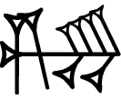
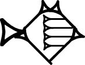

class: center, middle # Channel and Stream --- background-image: url(www.flickr.com--photos--rnddave--8540755397--.jpg) # Channel channel > chenel > [canalis](http://en.wiktionary.org/wiki/canalis) > canna (cane) > [κάννα](http://en.wiktionary.org/wiki/%CE%BA%CE%AC%CE%BD%CE%BD%CE%B1) >  (gi.na) --- # Channel - a subdivision of a large communication medium (in some contexts) - a message-oriented pipe between communicating end-points (in CSP) - the fundamental unit of communication and synchronisation (in CSP) - a model for interprocess communication and synchronization via message passing - message may be sent over a channel, and another process or thread is able to synchronously receive messages sent over a channel it has a reference to, as a stream. --- background-image: url(www.flickr.com--photos--everknew--8005781146--in--photostream--2048x949.jpg) # Stream from Proto-Indo-European *srew- (“to flow”) --- # Stream - a sequence of data elements made available over time - potentially unlimitted - can be read or written only sequentially - a continuous flow of data - something that is being streamed through a channel - preconnected communication channel (i.e. standard streams) - functions that operate on a stream, producing another stream, are known as filters - filters can be connected in pipelines, analogously to function composition. - a byte-oriented communication pipe, such as a TCP socket, which delivers a continuous stream of bytes or characters, without a clear subdivision that separates one message from another - a chunk-oriented communication pipe, which delivers a continuous stream of chunks, without a clear subdivision that separates one message from another --- # Links - [the concept of streams](http://stackoverflow.com/questions/507747/can-you-explain-the-concept-of-streams) - [Concepts: Channel vs. Stream](http://stackoverflow.com/questions/2810156/concepts-channel-vs-stream) - http://en.wikipedia.org/wiki/Standard_streams - http://en.wikipedia.org/wiki/Stream_(computing) - http://en.wikipedia.org/wiki/Channel_(programming)